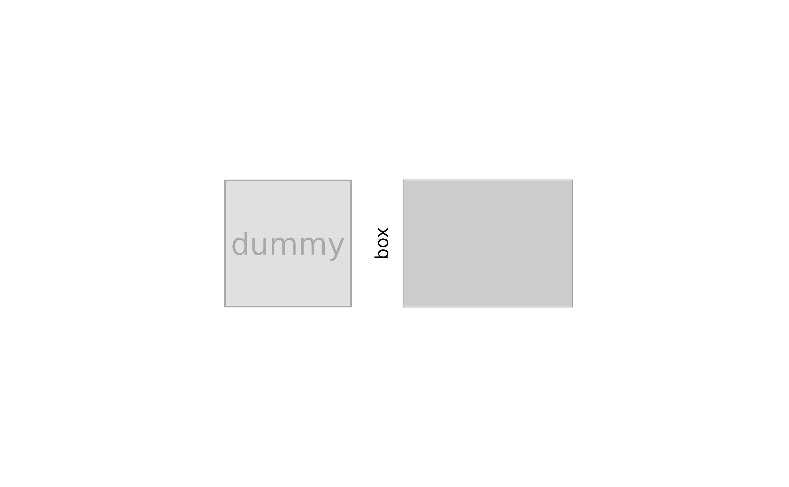

Layouts accept any object with an as_layout_gtable() method, not only
ggplots. The method renders the object to a gtable
whose grobs named "panel" (or starting with "panel") mark the tracks
to align on; all other tracks are treated as decoration (axes, titles,
legends, headers). Use it to make objects from other packages work with
new_row() and friends, without either package depending on the other.
Details
Track sizes are measured when the layout is drawn. Absolute units (e.g.
mm) give a fixed size; "null" units in the panel tracks let the layout
decide the panel size, like a ggplot without a fixed panel size.
The method for ggplots calls ggplot2::ggplotGrob().
Adding a method from another package
Register the method when your package is loaded, so tidylayouts stays
optional (in Suggests). With a small helper such as s3_register()
from vctrs, in .onLoad():
s3_register("tidylayouts::as_layout_gtable", "myclass")Examples
# an object that renders as a 40 x 30 mm panel with a 10 mm label on the left
as_layout_gtable.labelled_box <- function(x, ...) {
gt <- gtable::gtable(
widths = grid::unit(c(10, 40), "mm"),
heights = grid::unit(30, "mm")
)
gt <- gtable::gtable_add_grob(gt, grid::textGrob(x$label, rot = 90), t = 1, l = 1,
name = "label")
gtable::gtable_add_grob(gt, grid::rectGrob(gp = grid::gpar(fill = "grey80")),
t = 1, l = 2, name = "panel")
}
registerS3method("as_layout_gtable", "labelled_box", as_layout_gtable.labelled_box)
box <- structure(list(label = "box"), class = "labelled_box")
new_row(dummy(), box)
